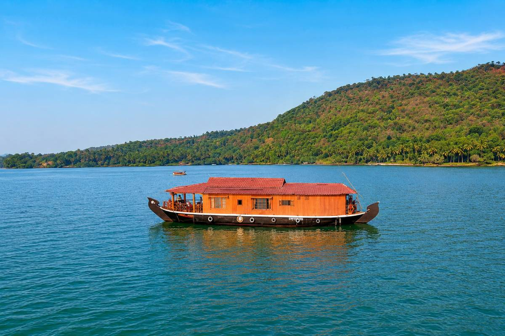
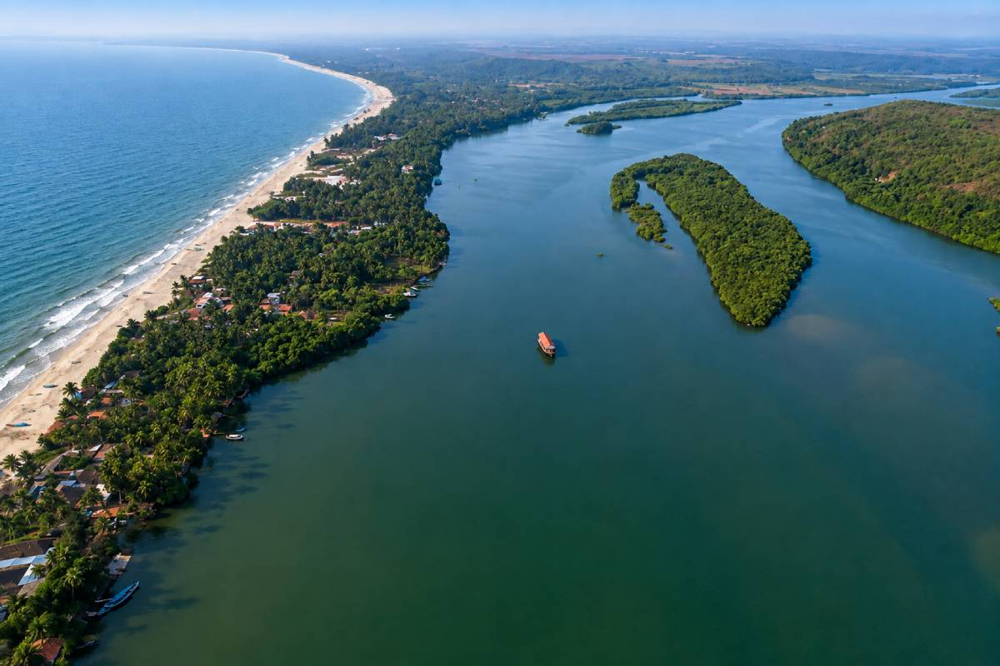

EXPLORE TARKARLI
Top Attractions In Tarkarli
Discover Tarkarli's most spectacular beaches, thrilling adventures, scenic backwaters and unforgettable experiences that attract visitors from across India throughout the year.



